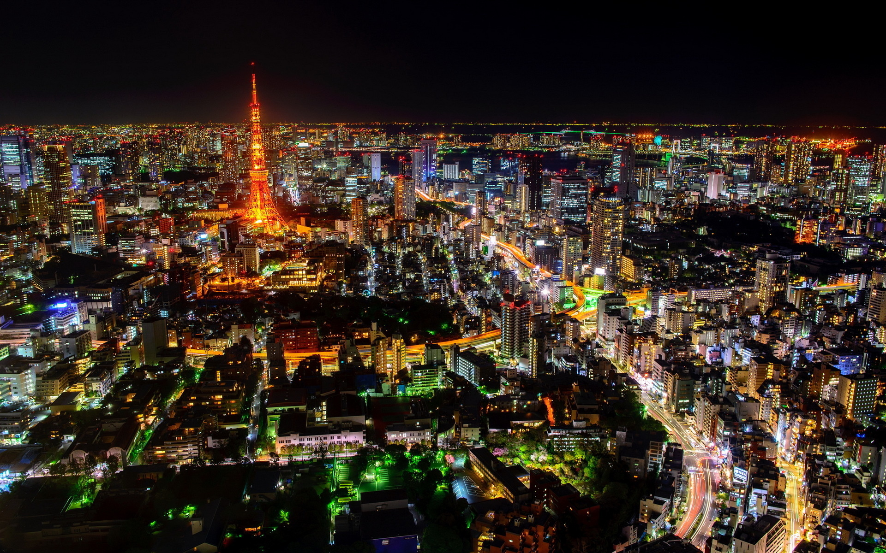
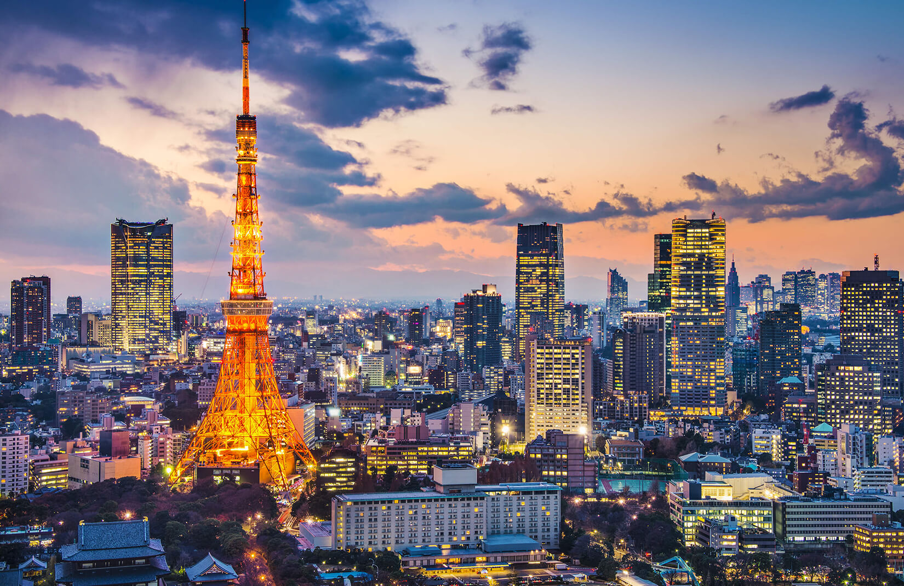
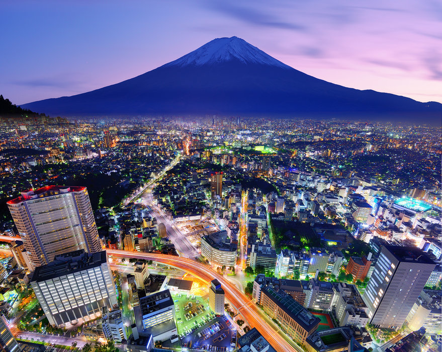

Tokyo

„Въпреки земетресенията, цунамито и тайфуните, Токио грабна първото място за безопасност. Което е полезно на място с толкова много за изследване и откриване по всяко време на нощта. Токио продължава да хипнотизира глобалните посетители със своите иновации, ефективност и денонощна кинетична мобилност “

Токио има вторите най-много ресторанти в който и да е град в света, класиран на второ място за своите ресторанти и е дом на някои променящи живота рамени , което го прави дестинация, на която си струва да планирате цяло пътуване около храна.

И ако по-голямата част от бюджета ви за пътуване отива за ядене, не се притеснявайте. Има много достъпни хотели в Токио, които можете да резервирате.